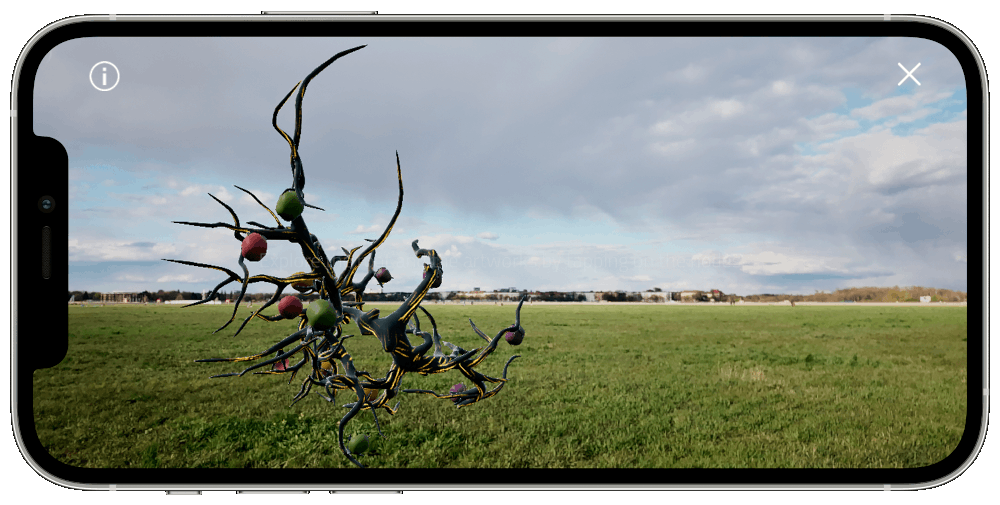
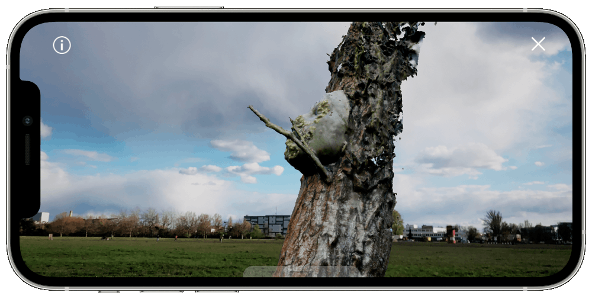
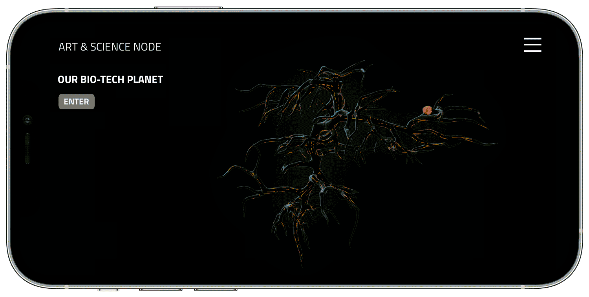

Art & Science Node Berlin presents a unique way to explore immersive, interactive art projects with a free mobile application using Augmented Reality technology. Understanding of the world as a multi-faceted environment gave rise to the concept of a root-like, nonhierarchical, 3D interface that guides the viewer inside the artworks. It serves as an introduction into the world of inter-connections and creativity embracing artistic research & practice, scientific discovery and technological progress.

ART & SCIENCE NODE app constitutes the meeting ground
between art and innovation in science and
technology, providing a wide survey of artworks created by artists inspired by scientific research
and collaborating with scientists in the field of life sciences and biotechnology. The AR projects
transfer the multitude of topics derived from biological inspirations, social issues, global
concerns and speculative reflections on the human-made systems onto multimedia narratives.
Presentation in an augmented reality environment lets the viewer experience the artworks in the
self-chosen surroundings, without the enclosure within the walls of museums and galleries. Visit a
park, a meadow or a busy city street (and many more) and explore the variety of the artworks
outside.

HOW DOES IT WORK?
1. Download and install the free ART & SCIENCE NODE application from Google Play/ App Store. It is
best to make the download when using Wi-Fi internet connection.
2. When using the app – please remember to stay aware of your surroundings!
3. Open the application. Before going in AR mode, check the Tutorial in the Menu to learn how to
fully enjoy the experience’s designed functionalities.
4. After entering the AR mode, scan the horizontal surfaces and click on the chosen marker’s
position to place the root-like interface.
5. Explore the interface and its nodes, each representing an original artwork. Choose the artworks
to display by clicking on the selected node.
6. If the artwork is implemented with sound, you will see a relevant icon. We suggest using
headphones for the best audio experience.
The app is available on Google Play or App Store

2021 ART & SCIENCE NODE
Created and produces by Art & Science Node (ASN)
Art Director: Joanna Hoffmann
Concept and coordination: Joanna Hoffmann, Karolina Wlazło-Malinowska
Designer & Curator: Karolina Wlazło-Malinowska
Engineer & Programmer: Pablo Ardila
Artworks – Exposition Developer: Arkadiusz Rataj
Terms of Service
Privacy Policy